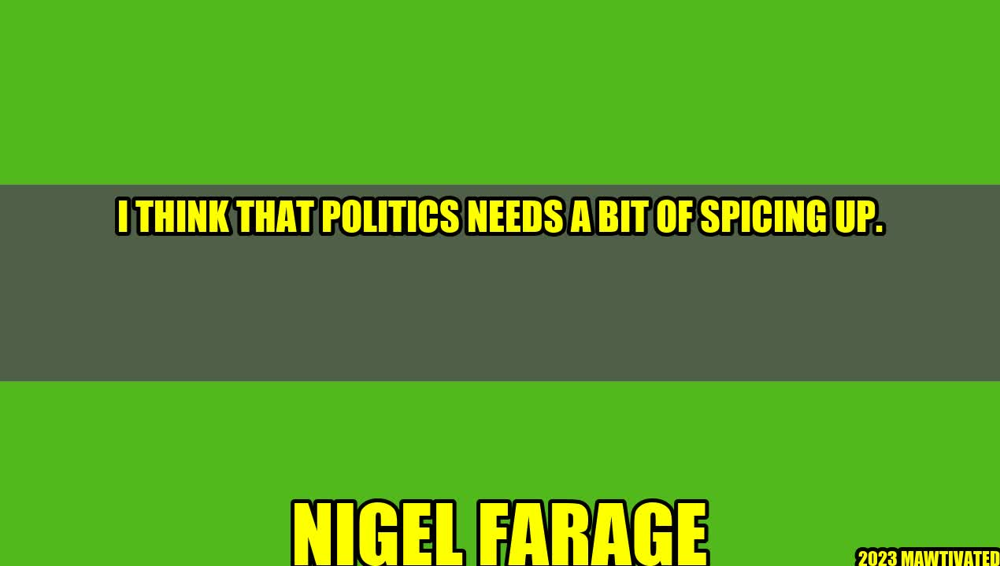

Pimping up Politics: How We Can Make Politics More Engaging
Politics is often seen as boring and inaccessible for the average person. But what if we could change that? What if we could make politics more engaging, more interesting, and more relevant to people's everyday lives?
An Inspiring Story
Let me share a story with you. In 2016, the United States held its presidential election. It was a heated and divisive campaign, with both major parties offering starkly different visions for the country's future. But despite this, voter turnout was higher than it had been in decades. Why? Because people were engaged. They were passionate. They felt like their vote really mattered.
This is what we need in politics. We need people to feel like they have a stake in the outcome, that their voice matters, and that they can really make a difference.
and Case Studies
Let me share a personal anecdote with you. When I first got involved in politics, I was a young man who was fed up with the status quo. I felt like the established parties were out of touch with ordinary people, and that nobody was really fighting for our interests. So I started speaking out. I started making my voice heard. And eventually, I found that there were plenty of people who felt the same way I did.
That's the thing about politics – it's not just a bunch of old men in suits making decisions behind closed doors. It's about real people, with real concerns and real hopes for the future. And when we can tap into that energy, we can really make things happen.
Examples
So how can we spice up politics? Here are a few ideas:
- Use social media. Social media has revolutionized the way we communicate, and politics is no exception. Platforms like Twitter and Facebook allow politicians to connect with voters in real time, and to share ideas and information in a way that's accessible and engaging.
- Be authentic. People are tired of politicians who talk in buzzwords and platitudes. They want to hear real, honest, and authentic voices that speak to their concerns. So don't be afraid to be yourself – even if that means being a little bit unconventional.
- Show, don't tell. The best way to engage people is to show them how politics affects their lives. So don't just talk about policies and ideas – show how they really make a difference. Share real-life stories and examples that illustrate your points.
The Power of Politics
Politics can be a powerful force for change. It can shape our society, our economy, and our future. But to really make an impact, we need to make it more engaging, more accessible, and more relevant to people's lives. By using social media, being authentic, and showing, not telling, we can create a politics that truly represents the people it serves.
Conclusion
In summary, here are three key points to remember:
- Politics is about real people with real concerns and real hopes for the future.
- Engagement is key – we need to make people feel like their voice matters.
- Bold ideas, authenticity, and real-life examples can make politics more engaging and relevant.
Hashtags
- #PimpingUpPolitics
- #EngagedPolitics
- #RealPeoplePolitics
SEO Keywords
- Pimping up politics
- Engaging politics
- Authentic politics
- Real-life examples
- Social media in politics
Article Category
Politics, activism, social media, engagement, grassroots movements
Curated by Team Akash.Mittal.Blog
Share on Twitter Share on LinkedIn